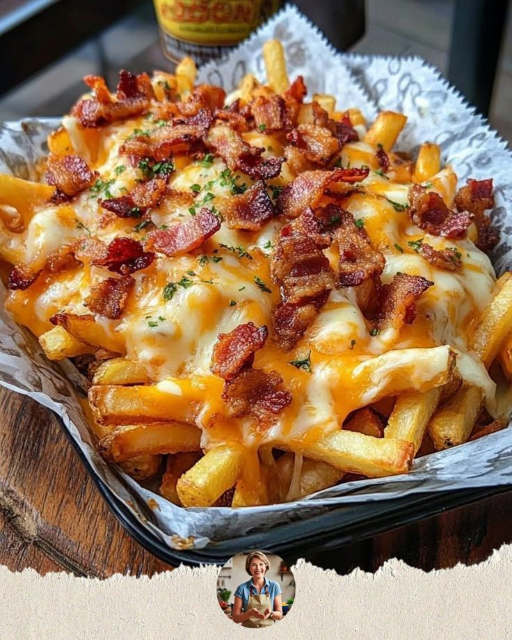

Papas fritas cargadas con carne, queso y tocino

Las papas fritas cargadas llevan un acompañamiento clásico directamente al terreno de la comida extrema. En esta versión, las papas se cubren con carne molida, abundante queso, tocino crujiente y una salsa cremosa. El resultado es un plato contundente, perfecto para nuestra categoría Tapa arterias y para quienes buscan una receta mucho más exagerada que unas simples papas fritas.